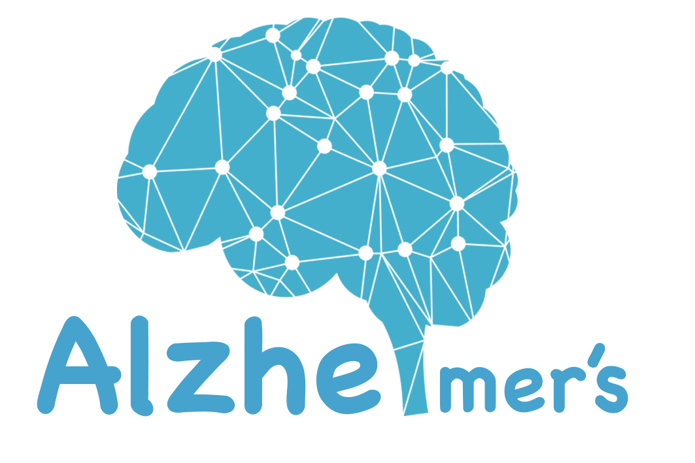

<!--
  Generated template for the HomePage page.

  See http://ionicframework.com/docs/components/#navigation for more info on
  Ionic pages and navigation.
-->
<ion-menu [content]="content" type="overlay" side="right">
  <ion-header>
    <ion-toolbar>
      <ion-title>Menu</ion-title>
    </ion-toolbar>
  </ion-header>

</ion-menu>

<ion-header>
  <ion-navbar color="primary">
   

    <ion-toolbar color="primary">
      LOGIN
    </ion-toolbar>

   
  </ion-navbar>
</ion-header>


<ion-content padding>

  <ion-grid style="text-align:center;">
    <ion-row style="font-weight:bold;background-color:#ffffff;font-size:20px;">
     
        <div (click)="goToPrePlay()">
            
            <br>
            <br>

      <ion-item >
        <ion-label><ion-icon name="person"></ion-icon></ion-label>
        <ion-input [(ngModel)]="userData.username" placeholder="ชื่อผู้ใช้" type="text"></ion-input>
      </ion-item>

      <ion-item>
          <ion-label><ion-icon name="lock"></ion-icon></ion-label>
          <ion-input [(ngModel)]="userData.password" placeholder="รหัสผ่าน" type="password"></ion-input>         
      </ion-item>
      <ion-item>
        <ion-label>จดจำรหัสผ่าน</ion-label>
        <ion-checkbox checked="true"></ion-checkbox>
      </ion-item>
      <button ion-button color="dark" clear (click)="forgot()">ลืมรหัสผ่าน</button>
      <br>
      <br>
      
      <button ion-button  round (click)="login()">เข้าสู่ระบบ</button>  
      <button ion-button  round (click)="nextregister()">ลงทะเบียน</button>
      

          </div>
          
    
        
     
      
    </ion-row>


  </ion-grid>

</ion-content>


<ion-footer>

</ion-footer>